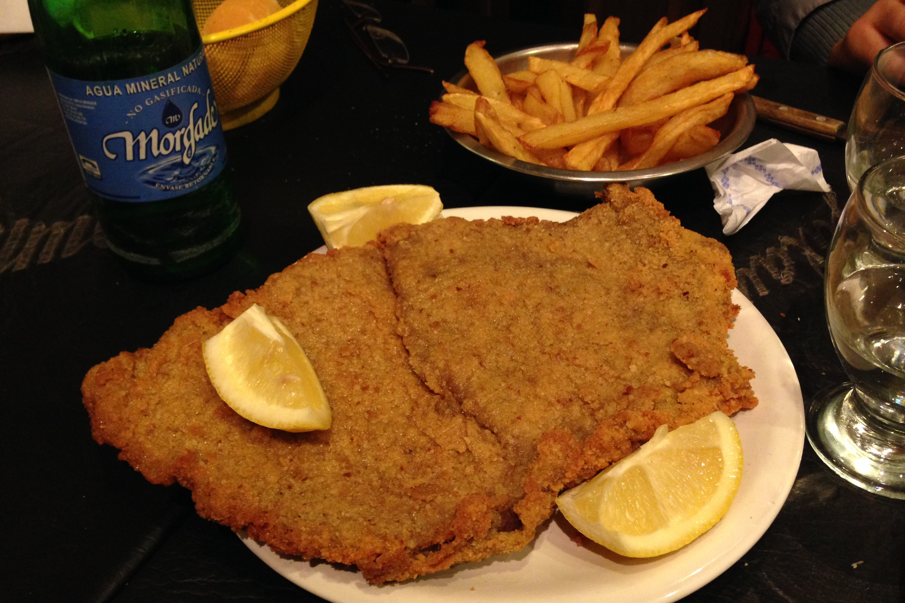

Description:
Probably you never heard about this recipe, but milanesas are one of the best ways to eat steaks of res, or chicken.
Ingredients:
2 large eggs, or more if needed
40 saltine crackers, smashed
4 thin slices of boneless round steak
salt and ground black pepper to taste
vegetable oil for frying
Steps:
- Crack eggs in a medium bowl and beat slightly with a fork or whisk. Set aside. Place smashed crackers on a plate big enough for the steak.
- Season steak with salt and pepper and soak in the beaten egg. Transfer to the smashed crackers and cover both sides with the crackers using a spoon; you can press a little bit with the spoon so that the crackers stick better.
- Heat a frying pan over medium heat and add enough oil to cover the bottom half of the steaks. Cook 2 steaks in the hot oil until crackers have turned light golden brown, 4 to 5 minutes. Turn and continue to cook until golden and meat is no longer pink, 4 to 5 minutes more. Transfer to a paper towel-lined plate to drain excess oil. Repeat with remaining steaks.
Cook's notes:
The normal recipe for this is with bread crumbs. But the crackers give a crispy taste and look.
Don't make dust out of the crackers. Leave some cracker bits so the Milanesa will be more crispy.
You'll need round steaks that are about 1/4 inch thick.
Return to top
Return to the Home page